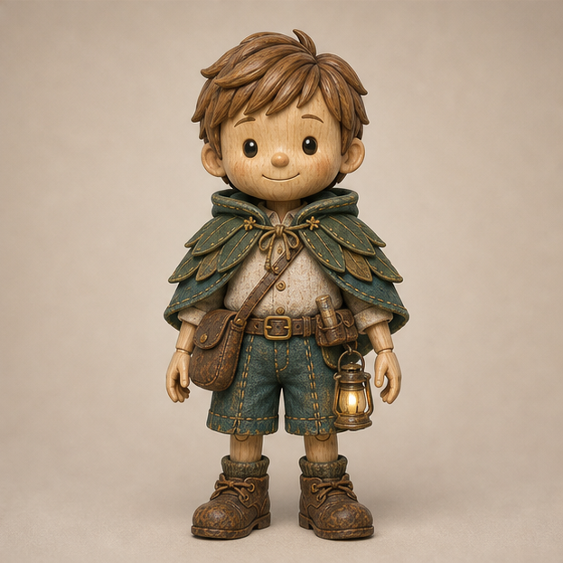

故事技能操作流程
先选故事，再交付可以完整复制的制作文案。

从选词到交付
- 只给核心词时，先给5个结合该词特征的童话大纲；用户选定才完整稿。已选故事直接继续。
- 可有动物，也可提提自己解决困难；避免重复叶片魔法。道具提供机会，提提亲自行动，结尾温柔搞笑。
- 中文制作说明，实际英文台词保留；不另附英文制作提示词翻译。
- 先确认12格，再逐图检查、独立生成镜头并剪成四段。三图不是连续形变关键帧。
完整交付：片头 → 生图总指令 → 固定设定与概要 → 四段正文（各含表格、逐图起始状态、视频动作、灯态、音乐）→ 片尾 → 台词总汇 → 智能英文文稿。
暗森林，局部暖光
浓密树冠遮蔽的深夜林下，不是清晨、黎明、蓝调时刻或明亮月夜。上方与人物头后没有明亮蓝天洞口、青蓝雾光或发亮林间通道，树冠空隙也接近黑色深靛蓝。取消蓝色天光、白色月光光柱、冷色轮廓光和大面积冷补光。背景近黑墨绿、深棕树干、极低亮深靛蓝，前景暗枝叶、中景少量暖光树纹、远景隐入暗处，不用白雾制造纵深。少量低位和后方蘑菇透出蜂蜜金与琥珀光，局部照亮苔藓，不整齐排列。腰灯及蘑菇发光中心保留形状，不曝成白团。脸、眼睛、手和核心物由柔和暖反射补光照清楚，有明暗，不是均匀棚拍光，不全图压黑或全景提亮。第一帧起固定曝光，文字或动作不能自动提亮背景。
片头片尾共用构图和弧形英文
片头片尾共用同一确认底图或相同机位、焦段感和人物缩放。头顶约33%高、面部中心52%高、身体中轴52%宽、头宽约52%；短裤下缘至大腿上部裁切，无膝盖或鞋，原款腰灯完整可见、微亮常亮。头顶、眼睛、肩线、腰带和下缘对齐，不推拉、不漂移。英文单行上拱，中间高两端低，字形基本直立不拉弯，不画辅助弧线。STRAWBERRY宽78%—82%，字母外接区域15%—27%高，中点高出两端3%—4%画高，最低字到头顶约6%画高。其他词随长度适配但保持同一安全区与两段一致。整词一次出现，位置弧度大小字距固定；中文同区端正居中，中英文不同屏，无底板或句子字幕。
光点与金色余光
萤火仅为稀疏、不规则、远近虚实不同的抽象暖金小光点，慢飞，少数带0.2—0.4秒消散的极短柔软金黄余光；无虫身翅膀触角、长轨、霓虹线或粒子流，不挡脸、道具、文字或暗灯腔，不照亮周边背景。纯黑时余光也消失。
咒语尾音是触发点
正片完整咒语实际尾音前全部镜头灯完全暗；尾音后下一帧立即暖金爆光0.6—0.8秒，再常亮。教学片头片尾独立常亮；灯的大小形状结构不变。许愿十指交错相扣于胸口，不掌心合十。
学习单词提示 · 完整复制模板
教学片头模板｜8秒｜9:16 请将【中文词】【英文词】【示范句】替换为本集内容。 【构图与文字】片头片尾共用同一确认底图或相同机位、焦段感和人物缩放。头顶约33%高、面部中心52%高、身体中轴52%宽、头宽约52%；短裤下缘至大腿上部裁切，无膝盖或鞋，原款腰灯完整可见、微亮常亮。头顶、眼睛、肩线、腰带和下缘对齐，不推拉、不漂移。英文单行上拱，中间高两端低，字形基本直立不拉弯，不画辅助弧线。STRAWBERRY宽78%—82%，字母外接区域15%—27%高，中点高出两端3%—4%画高，最低字到头顶约6%画高。其他词随长度适配但保持同一安全区与两段一致。整词一次出现，位置弧度大小字距固定；中文同区端正居中，中英文不同屏，无底板或句子字幕。 【深夜低调照明】浓密树冠遮蔽的深夜林下，不是清晨、黎明、蓝调时刻或明亮月夜。上方与人物头后没有明亮蓝天洞口、青蓝雾光或发亮林间通道，树冠空隙也接近黑色深靛蓝。取消蓝色天光、白色月光光柱、冷色轮廓光和大面积冷补光。背景近黑墨绿、深棕树干、极低亮深靛蓝，前景暗枝叶、中景少量暖光树纹、远景隐入暗处，不用白雾制造纵深。少量低位和后方蘑菇透出蜂蜜金与琥珀光，局部照亮苔藓，不整齐排列。腰灯及蘑菇发光中心保留形状，不曝成白团。脸、眼睛、手和核心物由柔和暖反射补光照清楚，有明暗，不是均匀棚拍光，不全图压黑或全景提亮。第一帧起固定曝光，文字或动作不能自动提亮背景。 【萤火】萤火仅为稀疏、不规则、远近虚实不同的抽象暖金小光点，慢飞，少数带0.2—0.4秒消散的极短柔软金黄余光；无虫身翅膀触角、长轨、霓虹线或粒子流，不挡脸、道具、文字或暗灯腔，不照亮周边背景。纯黑时余光也消失。 【音乐】全程直接生成极微弱、温柔、温暖的纯音乐，明显低于台词。柔软持续音色，稳定C大调和声，以轻柔C、G持续音为基础。无明显旋律、鼓点、节拍型、低音冲击、人声、哼唱、琶音、钟声或清晰钢琴敲击。像从已持续播放的音乐中截取，不重新开场。首尾各1秒及每个子镜头首尾保持同样极低和声，不新增清晰音符，不起奏、不收束、不转调、不做结束和弦、不突然静音。剪切、文字、手势、魔法、笑点及视觉黑屏不改变音乐，等待时不升高。音效独立、轻短、不遮对白。支持时六段使用同一音频参考及音量。 音乐边界：0—1秒及7—8秒无明显起奏收尾。 【时间轴】0—1秒开始“小朋友们，今天学习的单词是……”头顶留空；1—3.3秒说完及【中文词】，出现中文；3.3—4.5秒【英文词】，弧形英文替换；4.5—6秒【示范句】，英文保持；6—6.8秒“LET’S GO!”；6.8—8秒共同淡出，7.5秒全黑，末0.5秒纯黑。 【文字表现建议】 中文词：暖金木雕整体轻柔显现，不弹跳漂移。 英文词：中间高两端低，整词一次出现，字形不扭曲。 发音重点：按本词自然重音连读，不拼字母。 结束表现：全部视觉及余光消失，末0.5秒纯黑，音乐不突停。
12宫格 · 中文生图模板
结合【主体身份参考】与【本集道具参考】，生成【故事名】12张独立镜头起始状态。单格9:16，按2行6列组成16:9大图，第一排图1—6，第二排图7—12，外围补白适配，不拉伸裁切。统一窄白边和90度直角，不圆角。无文字编号字幕水印。每图只有一个静态起始状态，不拼动作。人物道具比例、轴线、持物和制作状态一致。深夜背景近黑墨绿、深棕与极低亮深靛蓝，无明亮蓝天洞口和晨光；局部暖蘑菇光照清人物核心物，不全图压黑。各图明确许愿前暗灯与许愿后常亮的状态，咒语镜起始不能提前亮灯。图1优先无人环境空镜展示核心物。图1—图12分别填入已确认的静态状态；相邻镜头视觉重点不同，不靠微调表情凑格数。不要加入音乐、动态进程和黑屏说明。
正文第1板块 · 完整复制模板
正文第1板块｜15秒｜9:16｜图1—3 本区是制作模板，需填入已确认故事；生成完整稿时不得保留占位符。 【制作】三个独立镜头正常剪接，不将近似图连续形变。角色、道具参考与空间状态不变。 【夜景】浓密树冠遮蔽的深夜林下，不是清晨、黎明、蓝调时刻或明亮月夜。上方与人物头后没有明亮蓝天洞口、青蓝雾光或发亮林间通道，树冠空隙也接近黑色深靛蓝。取消蓝色天光、白色月光光柱、冷色轮廓光和大面积冷补光。背景近黑墨绿、深棕树干、极低亮深靛蓝，前景暗枝叶、中景少量暖光树纹、远景隐入暗处，不用白雾制造纵深。少量低位和后方蘑菇透出蜂蜜金与琥珀光，局部照亮苔藓，不整齐排列。腰灯及蘑菇发光中心保留形状，不曝成白团。脸、眼睛、手和核心物由柔和暖反射补光照清楚，有明暗，不是均匀棚拍光，不全图压黑或全景提亮。第一帧起固定曝光，文字或动作不能自动提亮背景。 【灯态】每镜写明。完整Little light, shine bright!实际尾音前完全暗，无亮芯、火焰、内部光、光晕、粒子或照明；下一帧立即爆发0.6—0.8秒暖金放射光，再常亮。原灯结构尺寸挂位不变。许愿十指交错相扣，不掌心合十。 【道具】绑定本集确认参考，锁轮廓材料比例结构、持握和安装状态，成型即与后镜一致，不变成另一种物体。 【音乐】全程直接生成极微弱、温柔、温暖的纯音乐，明显低于台词。柔软持续音色，稳定C大调和声，以轻柔C、G持续音为基础。无明显旋律、鼓点、节拍型、低音冲击、人声、哼唱、琶音、钟声或清晰钢琴敲击。像从已持续播放的音乐中截取，不重新开场。首尾各1秒及每个子镜头首尾保持同样极低和声，不新增清晰音符，不起奏、不收束、不转调、不做结束和弦、不突然静音。剪切、文字、手势、魔法、笑点及视觉黑屏不改变音乐，等待时不升高。音效独立、轻短、不遮对白。支持时六段使用同一音频参考及音量。 本段0—1秒、14—15秒及三子镜头首尾无明显起奏收尾，剪切处音乐连续。 【分镜表】 镜号｜时间与时长（三镜共15秒）｜景别与运镜｜动作｜实际英文台词/音效 图1｜【时间】｜【景别运镜】｜【动作】｜【台词或无台词】 图2｜【时间】｜【景别运镜】｜【动作】｜【台词或无台词】 图3｜【时间】｜【景别运镜】｜【动作】｜【台词或无台词】 【图1独立图片与视频提示词】 图片起始状态：【一个静态瞬间，人物/物/灯态】 视频动作：【进程、运镜、原英文台词、停顿、音效；不新增音乐起奏】 【图2独立图片与视频提示词】 图片起始状态：【一个静态瞬间，人物/物/灯态】 视频动作：【进程、运镜、原英文台词、停顿、音效；不新增音乐起奏】 【图3独立图片与视频提示词】 图片起始状态：【一个静态瞬间，人物/物/灯态】 视频动作：【进程、运镜、原英文台词、停顿、音效；不新增音乐起奏】 【衔接与验收】记录出入段角色位置、持物和物体状态，未许愿灯必须暗。不增加段落结束和弦，不黑屏，不擅自提前亮灯。
正文第2板块 · 完整复制模板
正文第2板块｜15秒｜9:16｜图4—6 本区是制作模板，需填入已确认故事；生成完整稿时不得保留占位符。 【制作】三个独立镜头正常剪接，不将近似图连续形变。角色、道具参考与空间状态不变。 【夜景】浓密树冠遮蔽的深夜林下，不是清晨、黎明、蓝调时刻或明亮月夜。上方与人物头后没有明亮蓝天洞口、青蓝雾光或发亮林间通道，树冠空隙也接近黑色深靛蓝。取消蓝色天光、白色月光光柱、冷色轮廓光和大面积冷补光。背景近黑墨绿、深棕树干、极低亮深靛蓝，前景暗枝叶、中景少量暖光树纹、远景隐入暗处，不用白雾制造纵深。少量低位和后方蘑菇透出蜂蜜金与琥珀光，局部照亮苔藓，不整齐排列。腰灯及蘑菇发光中心保留形状，不曝成白团。脸、眼睛、手和核心物由柔和暖反射补光照清楚，有明暗，不是均匀棚拍光，不全图压黑或全景提亮。第一帧起固定曝光，文字或动作不能自动提亮背景。 【灯态】每镜写明。完整Little light, shine bright!实际尾音前完全暗，无亮芯、火焰、内部光、光晕、粒子或照明；下一帧立即爆发0.6—0.8秒暖金放射光，再常亮。原灯结构尺寸挂位不变。许愿十指交错相扣，不掌心合十。 【道具】绑定本集确认参考，锁轮廓材料比例结构、持握和安装状态，成型即与后镜一致，不变成另一种物体。 【音乐】全程直接生成极微弱、温柔、温暖的纯音乐，明显低于台词。柔软持续音色，稳定C大调和声，以轻柔C、G持续音为基础。无明显旋律、鼓点、节拍型、低音冲击、人声、哼唱、琶音、钟声或清晰钢琴敲击。像从已持续播放的音乐中截取，不重新开场。首尾各1秒及每个子镜头首尾保持同样极低和声，不新增清晰音符，不起奏、不收束、不转调、不做结束和弦、不突然静音。剪切、文字、手势、魔法、笑点及视觉黑屏不改变音乐，等待时不升高。音效独立、轻短、不遮对白。支持时六段使用同一音频参考及音量。 本段0—1秒、14—15秒及三子镜头首尾无明显起奏收尾，剪切处音乐连续。 【分镜表】 镜号｜时间与时长（三镜共15秒）｜景别与运镜｜动作｜实际英文台词/音效 图4｜【时间】｜【景别运镜】｜【动作】｜【台词或无台词】 图5｜【时间】｜【景别运镜】｜【动作】｜【台词或无台词】 图6｜【时间】｜【景别运镜】｜【动作】｜【台词或无台词】 【图4独立图片与视频提示词】 图片起始状态：【一个静态瞬间，人物/物/灯态】 视频动作：【进程、运镜、原英文台词、停顿、音效；不新增音乐起奏】 【图5独立图片与视频提示词】 图片起始状态：【一个静态瞬间，人物/物/灯态】 视频动作：【进程、运镜、原英文台词、停顿、音效；不新增音乐起奏】 【图6独立图片与视频提示词】 图片起始状态：【一个静态瞬间，人物/物/灯态】 视频动作：【进程、运镜、原英文台词、停顿、音效；不新增音乐起奏】 【衔接与验收】记录出入段角色位置、持物和物体状态，未许愿灯必须暗。不增加段落结束和弦，不黑屏，不擅自提前亮灯。
正文第3板块 · 完整复制模板
正文第3板块｜15秒｜9:16｜图7—9 本区是制作模板，需填入已确认故事；生成完整稿时不得保留占位符。 【制作】三个独立镜头正常剪接，不将近似图连续形变。角色、道具参考与空间状态不变。 【夜景】浓密树冠遮蔽的深夜林下，不是清晨、黎明、蓝调时刻或明亮月夜。上方与人物头后没有明亮蓝天洞口、青蓝雾光或发亮林间通道，树冠空隙也接近黑色深靛蓝。取消蓝色天光、白色月光光柱、冷色轮廓光和大面积冷补光。背景近黑墨绿、深棕树干、极低亮深靛蓝，前景暗枝叶、中景少量暖光树纹、远景隐入暗处，不用白雾制造纵深。少量低位和后方蘑菇透出蜂蜜金与琥珀光，局部照亮苔藓，不整齐排列。腰灯及蘑菇发光中心保留形状，不曝成白团。脸、眼睛、手和核心物由柔和暖反射补光照清楚，有明暗，不是均匀棚拍光，不全图压黑或全景提亮。第一帧起固定曝光，文字或动作不能自动提亮背景。 【灯态】每镜写明。完整Little light, shine bright!实际尾音前完全暗，无亮芯、火焰、内部光、光晕、粒子或照明；下一帧立即爆发0.6—0.8秒暖金放射光，再常亮。原灯结构尺寸挂位不变。许愿十指交错相扣，不掌心合十。 【道具】绑定本集确认参考，锁轮廓材料比例结构、持握和安装状态，成型即与后镜一致，不变成另一种物体。 【音乐】全程直接生成极微弱、温柔、温暖的纯音乐，明显低于台词。柔软持续音色，稳定C大调和声，以轻柔C、G持续音为基础。无明显旋律、鼓点、节拍型、低音冲击、人声、哼唱、琶音、钟声或清晰钢琴敲击。像从已持续播放的音乐中截取，不重新开场。首尾各1秒及每个子镜头首尾保持同样极低和声，不新增清晰音符，不起奏、不收束、不转调、不做结束和弦、不突然静音。剪切、文字、手势、魔法、笑点及视觉黑屏不改变音乐，等待时不升高。音效独立、轻短、不遮对白。支持时六段使用同一音频参考及音量。 本段0—1秒、14—15秒及三子镜头首尾无明显起奏收尾，剪切处音乐连续。 【分镜表】 镜号｜时间与时长（三镜共15秒）｜景别与运镜｜动作｜实际英文台词/音效 图7｜【时间】｜【景别运镜】｜【动作】｜【台词或无台词】 图8｜【时间】｜【景别运镜】｜【动作】｜【台词或无台词】 图9｜【时间】｜【景别运镜】｜【动作】｜【台词或无台词】 【图7独立图片与视频提示词】 图片起始状态：【一个静态瞬间，人物/物/灯态】 视频动作：【进程、运镜、原英文台词、停顿、音效；不新增音乐起奏】 【图8独立图片与视频提示词】 图片起始状态：【一个静态瞬间，人物/物/灯态】 视频动作：【进程、运镜、原英文台词、停顿、音效；不新增音乐起奏】 【图9独立图片与视频提示词】 图片起始状态：【一个静态瞬间，人物/物/灯态】 视频动作：【进程、运镜、原英文台词、停顿、音效；不新增音乐起奏】 【衔接与验收】记录出入段角色位置、持物和物体状态，未许愿灯必须暗。不增加段落结束和弦，不黑屏，不擅自提前亮灯。
正文第4板块 · 完整复制模板
正文第4板块｜15秒｜9:16｜图10—12 本区是制作模板，需填入已确认故事；生成完整稿时不得保留占位符。 【制作】三个独立镜头正常剪接，不将近似图连续形变。角色、道具参考与空间状态不变。 【夜景】浓密树冠遮蔽的深夜林下，不是清晨、黎明、蓝调时刻或明亮月夜。上方与人物头后没有明亮蓝天洞口、青蓝雾光或发亮林间通道，树冠空隙也接近黑色深靛蓝。取消蓝色天光、白色月光光柱、冷色轮廓光和大面积冷补光。背景近黑墨绿、深棕树干、极低亮深靛蓝，前景暗枝叶、中景少量暖光树纹、远景隐入暗处，不用白雾制造纵深。少量低位和后方蘑菇透出蜂蜜金与琥珀光，局部照亮苔藓，不整齐排列。腰灯及蘑菇发光中心保留形状，不曝成白团。脸、眼睛、手和核心物由柔和暖反射补光照清楚，有明暗，不是均匀棚拍光，不全图压黑或全景提亮。第一帧起固定曝光，文字或动作不能自动提亮背景。 【灯态】每镜写明。完整Little light, shine bright!实际尾音前完全暗，无亮芯、火焰、内部光、光晕、粒子或照明；下一帧立即爆发0.6—0.8秒暖金放射光，再常亮。原灯结构尺寸挂位不变。许愿十指交错相扣，不掌心合十。 【道具】绑定本集确认参考，锁轮廓材料比例结构、持握和安装状态，成型即与后镜一致，不变成另一种物体。 【音乐】全程直接生成极微弱、温柔、温暖的纯音乐，明显低于台词。柔软持续音色，稳定C大调和声，以轻柔C、G持续音为基础。无明显旋律、鼓点、节拍型、低音冲击、人声、哼唱、琶音、钟声或清晰钢琴敲击。像从已持续播放的音乐中截取，不重新开场。首尾各1秒及每个子镜头首尾保持同样极低和声，不新增清晰音符，不起奏、不收束、不转调、不做结束和弦、不突然静音。剪切、文字、手势、魔法、笑点及视觉黑屏不改变音乐，等待时不升高。音效独立、轻短、不遮对白。支持时六段使用同一音频参考及音量。 本段0—1秒、14—15秒及三子镜头首尾无明显起奏收尾，剪切处音乐连续。 【分镜表】 镜号｜时间与时长（三镜共15秒）｜景别与运镜｜动作｜实际英文台词/音效 图10｜【时间】｜【景别运镜】｜【动作】｜【台词或无台词】 图11｜【时间】｜【景别运镜】｜【动作】｜【台词或无台词】 图12｜【时间】｜【景别运镜】｜【动作】｜【台词或无台词】 【图10独立图片与视频提示词】 图片起始状态：【一个静态瞬间，人物/物/灯态】 视频动作：【进程、运镜、原英文台词、停顿、音效；不新增音乐起奏】 【图11独立图片与视频提示词】 图片起始状态：【一个静态瞬间，人物/物/灯态】 视频动作：【进程、运镜、原英文台词、停顿、音效；不新增音乐起奏】 【图12独立图片与视频提示词】 图片起始状态：【一个静态瞬间，人物/物/灯态】 视频动作：【进程、运镜、原英文台词、停顿、音效；不新增音乐起奏】 【衔接与验收】记录出入段角色位置、持物和物体状态，未许愿灯必须暗。最后反转后圆形遮罩缩到零，末0.5秒不透明纯黑无小孔、灯光或余光；音乐继续低声床。
片尾单词复读 · 完整复制模板
教学片尾模板｜10秒内｜9:16 请将【中文词】【英文词】替换为本集内容。 【构图与文字】片头片尾共用同一确认底图或相同机位、焦段感和人物缩放。头顶约33%高、面部中心52%高、身体中轴52%宽、头宽约52%；短裤下缘至大腿上部裁切，无膝盖或鞋，原款腰灯完整可见、微亮常亮。头顶、眼睛、肩线、腰带和下缘对齐，不推拉、不漂移。英文单行上拱，中间高两端低，字形基本直立不拉弯，不画辅助弧线。STRAWBERRY宽78%—82%，字母外接区域15%—27%高，中点高出两端3%—4%画高，最低字到头顶约6%画高。其他词随长度适配但保持同一安全区与两段一致。整词一次出现，位置弧度大小字距固定；中文同区端正居中，中英文不同屏，无底板或句子字幕。 【深夜低调照明】浓密树冠遮蔽的深夜林下，不是清晨、黎明、蓝调时刻或明亮月夜。上方与人物头后没有明亮蓝天洞口、青蓝雾光或发亮林间通道，树冠空隙也接近黑色深靛蓝。取消蓝色天光、白色月光光柱、冷色轮廓光和大面积冷补光。背景近黑墨绿、深棕树干、极低亮深靛蓝，前景暗枝叶、中景少量暖光树纹、远景隐入暗处，不用白雾制造纵深。少量低位和后方蘑菇透出蜂蜜金与琥珀光，局部照亮苔藓，不整齐排列。腰灯及蘑菇发光中心保留形状，不曝成白团。脸、眼睛、手和核心物由柔和暖反射补光照清楚，有明暗，不是均匀棚拍光，不全图压黑或全景提亮。第一帧起固定曝光，文字或动作不能自动提亮背景。 【萤火】萤火仅为稀疏、不规则、远近虚实不同的抽象暖金小光点，慢飞，少数带0.2—0.4秒消散的极短柔软金黄余光；无虫身翅膀触角、长轨、霓虹线或粒子流，不挡脸、道具、文字或暗灯腔，不照亮周边背景。纯黑时余光也消失。 【音乐】全程直接生成极微弱、温柔、温暖的纯音乐，明显低于台词。柔软持续音色，稳定C大调和声，以轻柔C、G持续音为基础。无明显旋律、鼓点、节拍型、低音冲击、人声、哼唱、琶音、钟声或清晰钢琴敲击。像从已持续播放的音乐中截取，不重新开场。首尾各1秒及每个子镜头首尾保持同样极低和声，不新增清晰音符，不起奏、不收束、不转调、不做结束和弦、不突然静音。剪切、文字、手势、魔法、笑点及视觉黑屏不改变音乐，等待时不升高。音效独立、轻短、不遮对白。支持时六段使用同一音频参考及音量。 音乐边界：0—1秒及9—10秒无明显起奏收尾。 【时间轴】0—3.5秒“故事看完啦！跟提提再念一遍今天的单词吧！”，留空；3.5—4.1秒【英文词】第1遍，弧形字；4.1—5.1秒等跟读；5.1—5.7秒第2遍，原词轻亮；5.7—6.7秒等跟读；6.7—7.3秒【中文词】替换；7.3—8.7秒“你学会了吗？”；8.7—10秒等待共同淡出，9.5秒全黑，末0.5秒纯黑。 【文字表现建议】 英文词：与片头相同弧形、区域、大小和材质。 重复表现：原词轻亮，不复制不重新入场。 中文词：同区替换，不与英文同时显示。 结束表现：蘑菇、灯、光点及余光随人物文字全消失，末0.5秒纯黑，音乐不突停。
智能文稿匹配 · 复制规则
按实际播放顺序汇总本集真正说出的英文台词。排除中文译文、动作、音效、标题、角色名和停顿说明；未安排的Hello或Bye-bye不凭空补入。用户明确指定筛选版时按其环节筛选并标注，不冒充逐字转录。输出一个连续英文段落。